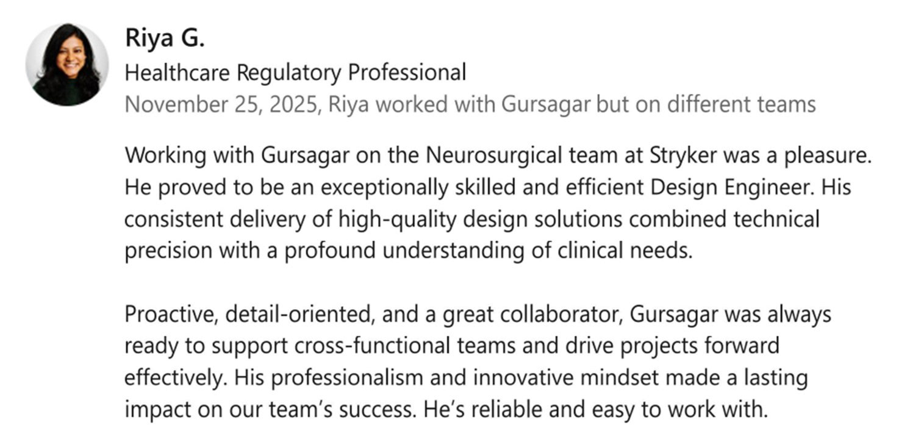
Hi, I'm Guru
Thanks for dropping by, have a squiz at what I’ve been building with a fair bit of heart and hustle..
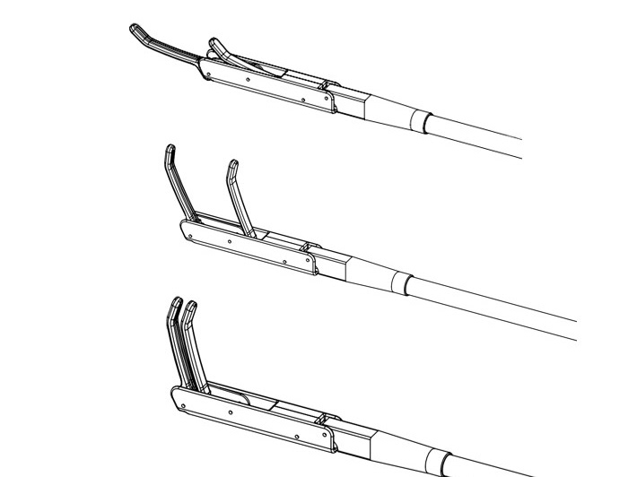
Epicardial PFA Isolator Clamp (EPIC)
CathRx Australia
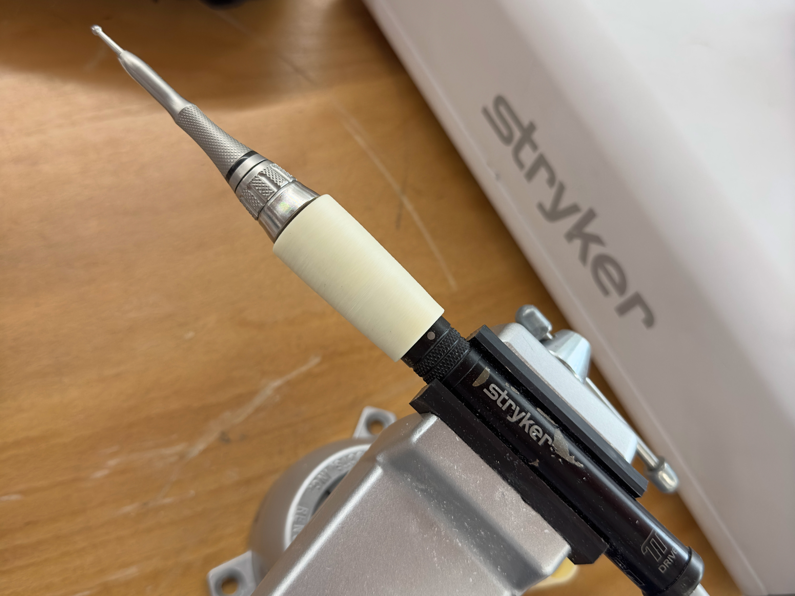
Oscillating Attachment (OSCA)
Stryker Corporation

Meditate Air Purifier
Havells
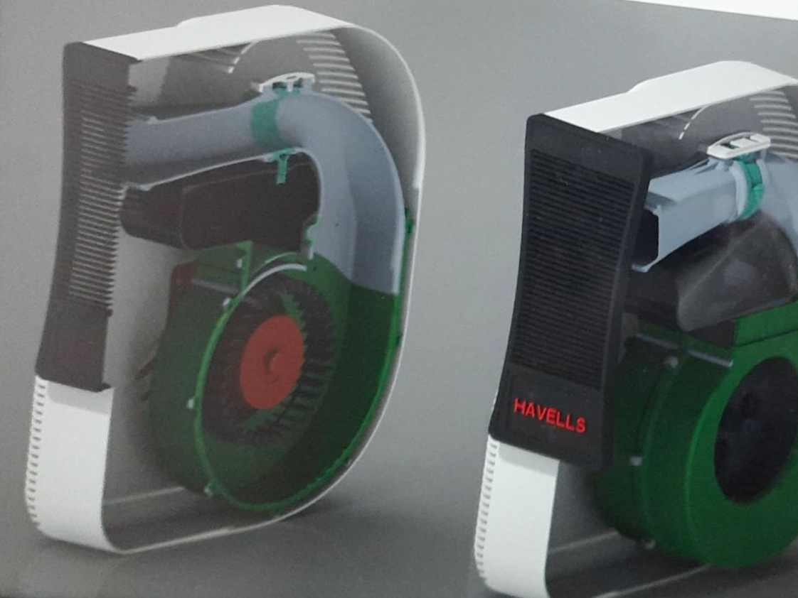
Venturi Air Cooler and VTAS Valve
Havells
Passion before paychecks...
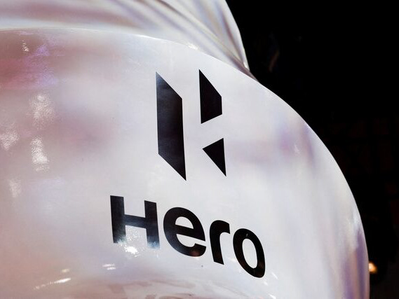
Hero MotoCorp
2018
6 Months paid industry Internship
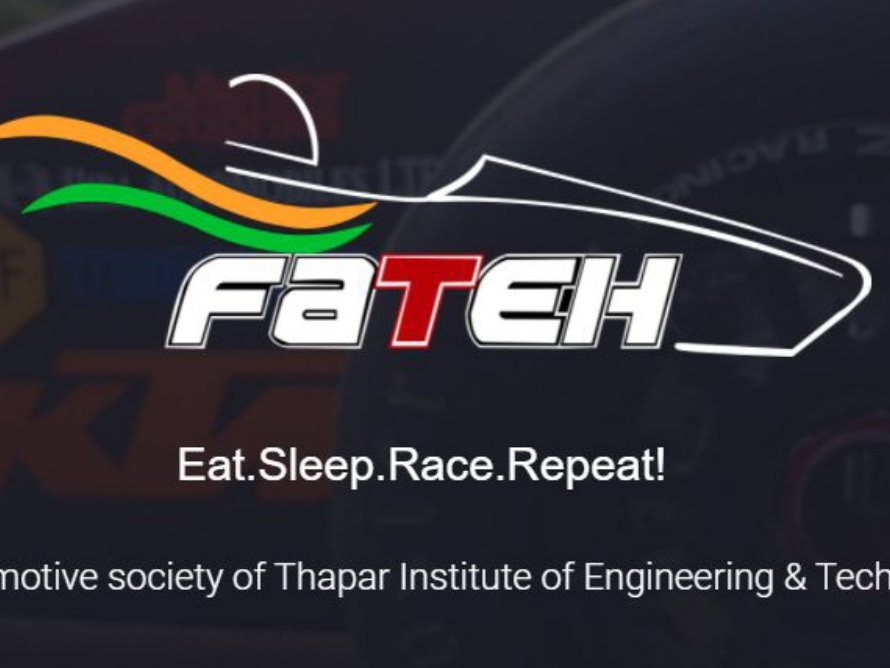
Fateh Motorsports
2017
Automotive Society of TIET
Patents
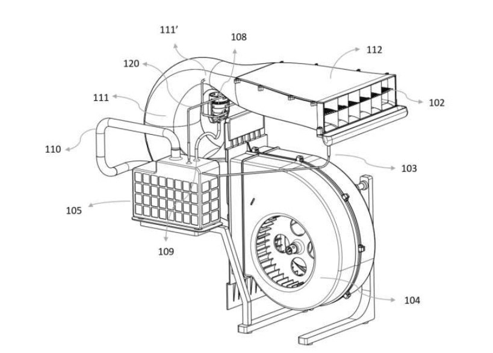
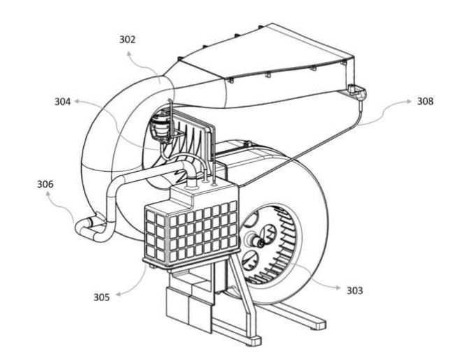
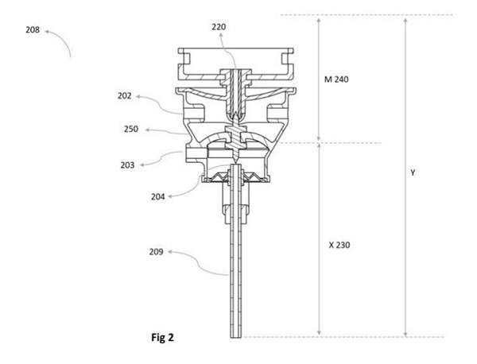
IN202011018315 · Issued Jan 17, 2024
Status: Granted
Contribution: Lead Inventor
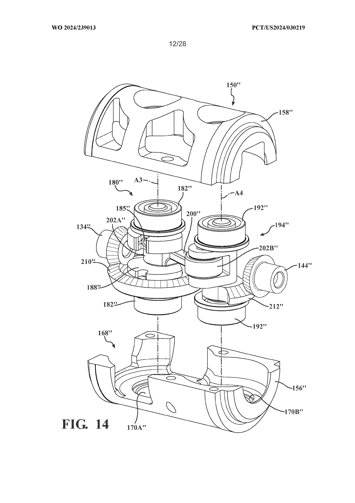
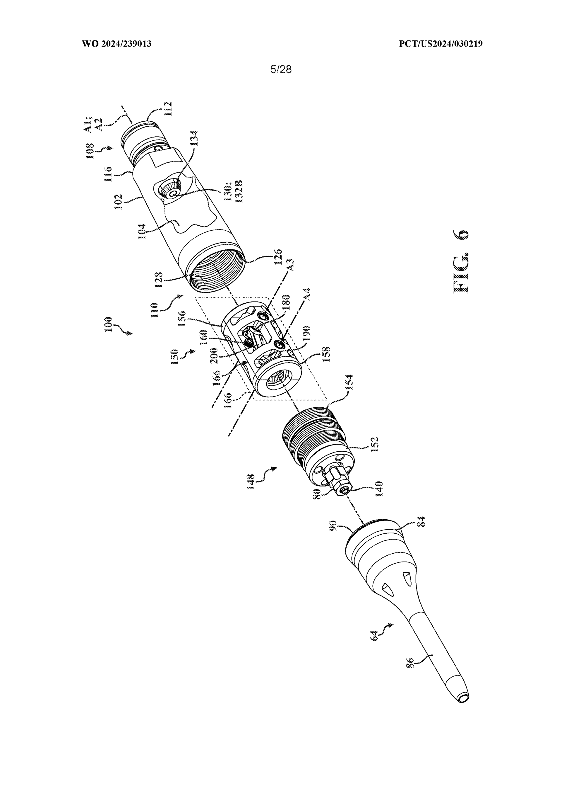
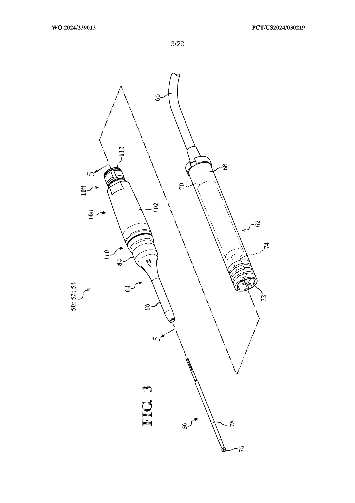
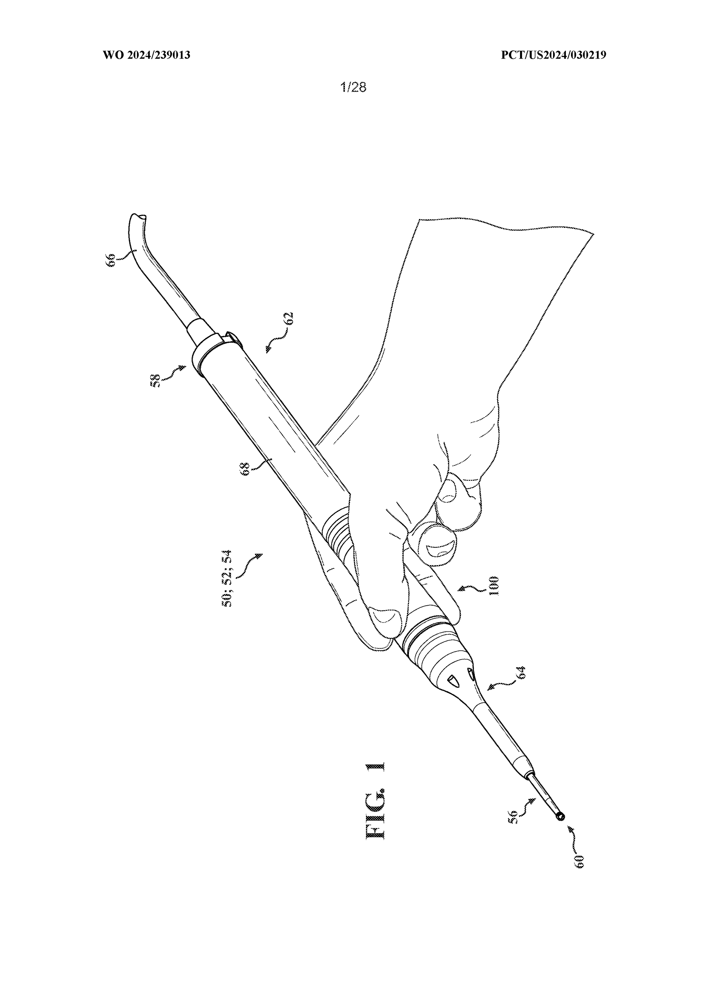
MOTION CONVERTING ATTACHMENT FOR A SURGICAL TOOL
WO2024239013 · Filed May 20, 2024
Status: Published
Contribution: Lead Inventor
MULTIFUNCTION SWITCH
IN202011014294 · Issued Jan 8, 2024
Status: Granted
Contribution: Co-Inventor
HYBRID AIR COOLER
IN202111025881 · Filed June 10, 2021
Status: Published
Contribution: Co-Inventor
SYSTEM AND METHOD OF CONTROLLABLY OPERATING A WATER HEATER
IN202211008779 · Filed Feb 19, 2022
Status: Granted
Contribution: Co-Inventor
2 provisional patent applications in process as of Dec 2025,
Check my LinkedIn for more!
Recommendations
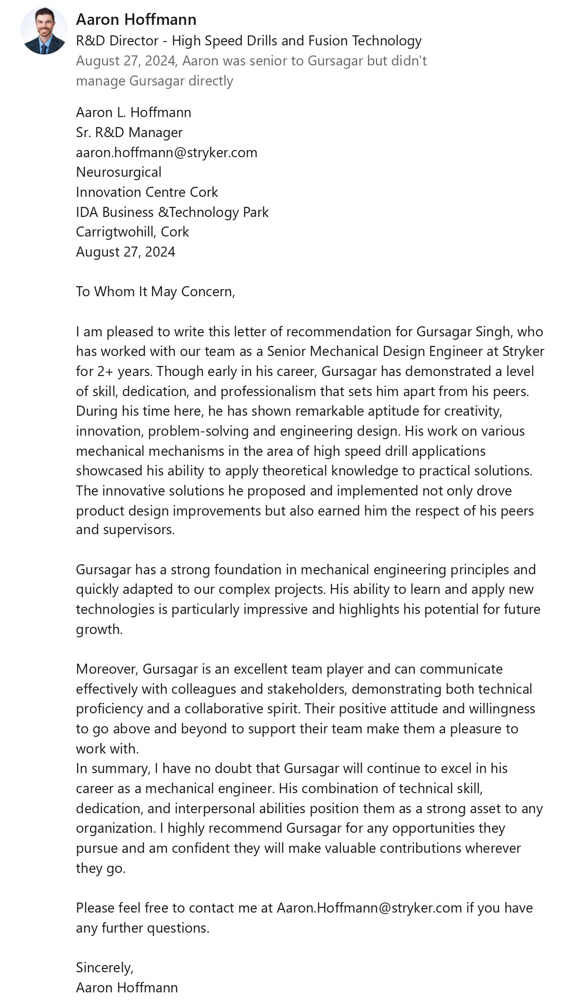
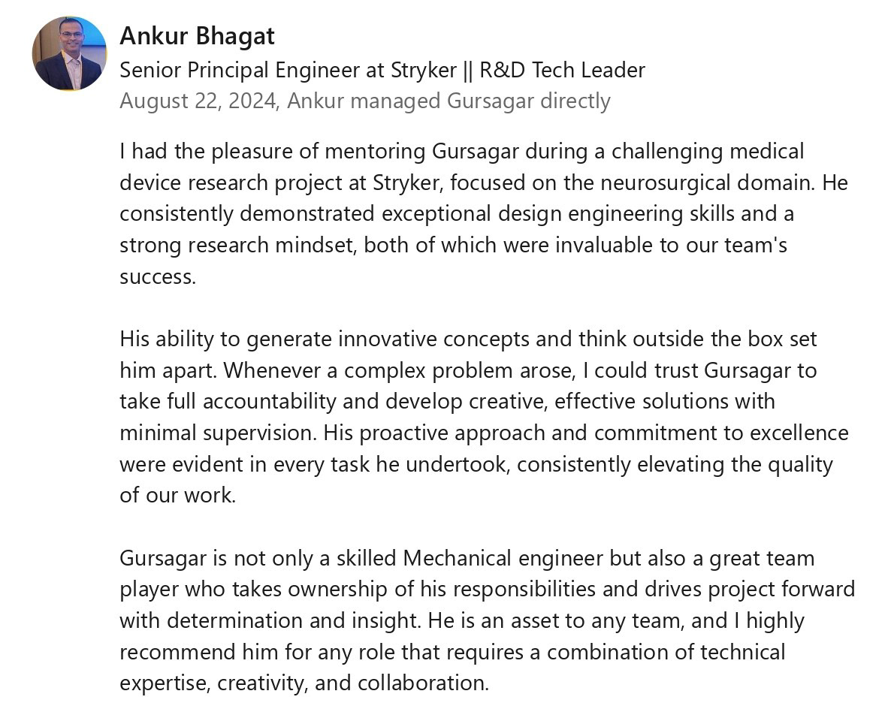
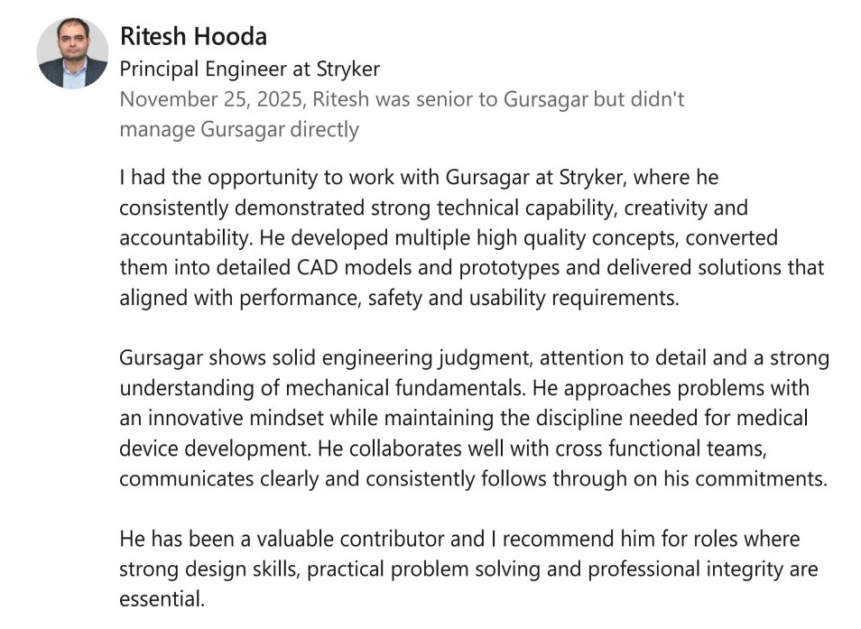
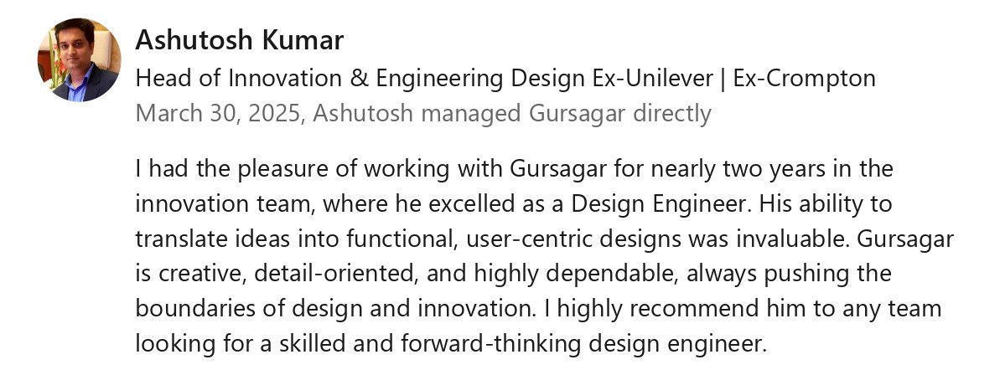
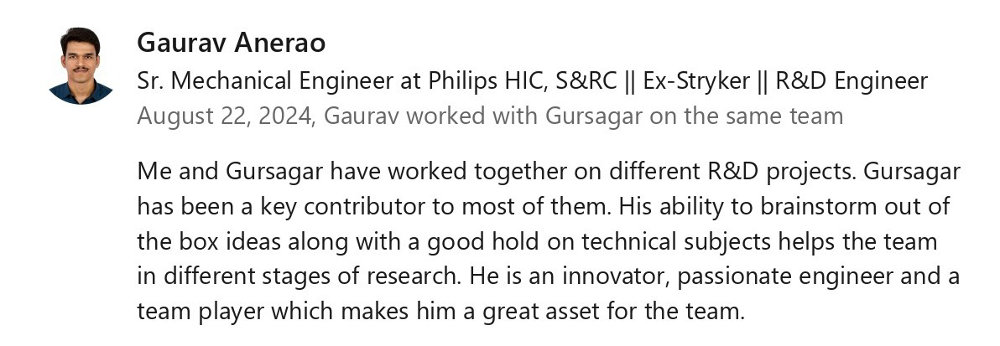
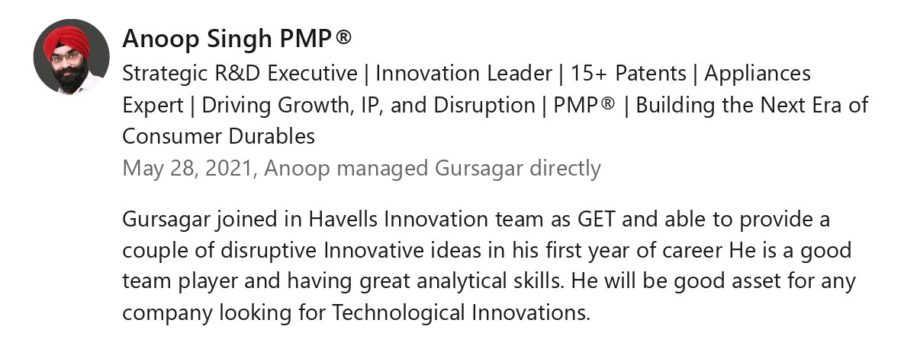
NER
Contact
Thanks for visiting, I’d love to hear back!
Here are my contact details:
Mobile: 0481 839 246
Email : gursagar.virdi1@gmail.com
Epicardial PFA Isolator Clamp (EPIC)
PrefacE
The EPIC Clamp (Epicardial PFA Isolation Clamp) is a next-generation cardiac ablation device designed for minimally invasive surgery (MIS). Unlike traditional clamps that rely on radiofrequency (RF) or cryoablation and require open-heart access, EPIC delivers Pulsed Field Ablation (PFA) in a way that selectively targets cardiac cells while sparing surrounding tissues. The clamp’s swiveling jaw mechanism enables precise and stable pulmonary vein isolation, a critical step in treating Atrial Fibrillation (AFib).
Problem StatemenT
Existing epicardial clamps on the market are not designed for MIS due to their rigid jaws and large profiles, requiring open-heart surgery for proper placement. This poses several challenges:
- Limited Access: Conventional clamps cannot fit through small thoracoscopic ports, making MIS procedures impossible.
- Inconsistent Contact: Fixed-jaw clamps do not conform to cardiac anatomy, leading to uneven energy delivery and incomplete pulmonary vein isolation.
- Tissue Trauma: Without adaptive motion, clamps can cause excessive force on tissue, leading to potential damage and procedural inefficiencies.
- Complex Procedures: Surgeons must work around the limitations of existing RF or cryo clamps, increasing operative time and reducing procedural confidence.
Solution
I am developing the EPIC Clamp to solve these challenges with a swiveling jaw design that allows the clamp to collapse into a slim “I” shape for easy insertion through an MIS introducer, then expand into a “C” shape for secure tissue engagement. The jaws independently swivel, adjusting to the anatomical curvature of the pulmonary veins, ensuring consistent and complete energy delivery. This design enables precise, controlled PFA energy application, reducing the risk of collateral damage to surrounding tissues while maintaining high procedural efficiency.
Result
The EPIC Clamp is the first and only epicardial PFA clamp designed for MIS procedures, significantly expanding treatment options for AFib. Clinical feedback is already confirming:
- Improved Procedural Confidence: Surgeons can perform PFA without concerns of collateral damage, unlike RF and cryo clamps.
- Optimized Contact & Energy Delivery: The adaptive jaw motion ensures uniform pulmonary vein isolation, improving treatment effectiveness.
- Reduced Trauma & Learning Curve: MIS-compatible design allows for a familiar yet safer approach for surgeons experienced with traditional RF clamps.
My Role/Contribution
- Working as a lead design engineer, came up with the novel jaw swivel mechanism, enabling MIS access while ensuring stable contact for effective PFA energy delivery.
- Engineering the mechanical architecture, including CAD (Creo), simulations, calculations, and tolerance stack-ups, while following GD&T, DFA, and DFM principles.
- Leading iterative prototyping, refining the design based on surgeon feedback to optimize usability and safety.
- Collaborating with cross-functional teams, including clinical, regulatory and manufacturing, to ensure design feasibility and compliance with regulatory framework .
- Risk management by complying to ISO 14971, Failure modes and effects analysis (FMEA), Usability analysis
- Creating test protocols and collaborating with test labs
- Collaborating with manufacturing team for Process optimization and feedback
- Contributing to patent filings, protecting the novel design features of the EPIC Clamp.
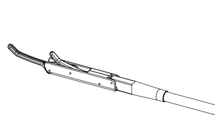
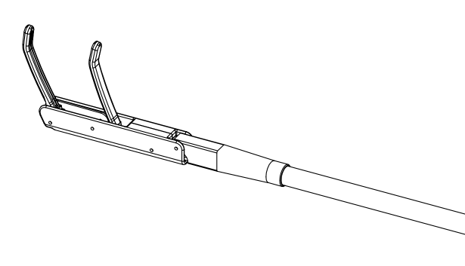
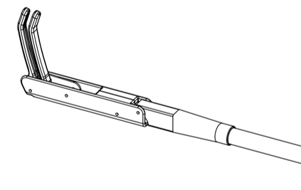
Tech Stack Used
- CAD
- Solid Works
- Simulation
- SolidWorks Motion
- Calculations, Tolerance Stack-up
- Microsoft Excel
- Manufacturing
- 3D Printing, Manual Machining
- Material Selection and DFA
- Coding
- Python (ODE solver), Google Colab
Disclaimer: The information presented in this page is based on published information in form of patents and articles, and does not disclose any commercially sensitive details.
You may also like
Oscillating Attachment (OSCA)
Preface
The Oscillating Attachment (OSCA) is engineered to work with Stryker’s Signature 2 High-Speed Motors (75,000 RPM). This attachment converts the motor's rotational motion into oscillation at the cutting bur, reducing soft-tissue damage while enabling precise cutting in cortical bone.
Problem Statement
Conventional high-speed rotational surgical drills are prone to soft tissue wrap on the rotating cutting tool, where surrounding tissue entangles around the rotating shaft of the cutting bur. The continuously rotating bur can catch and uproot adjacent tissue, leading to tissue accumulation on the bur shank and obstructing the clinician’s line of sight. When operating near critical anatomical structures, there is a risk of the drill catching or nicking vital tissue, potentially increasing procedure time and causing complications.
Additionally, conventional high-speed drills have a high tendency to skive, sliding uncontrollably across the bone surface at elevated speeds.
Accordingly, there is a need for a bone cutting tool that operates within an optimal middle ground, providing a safety profile while maintaining the cutting speed and efficiency of a high-speed drill.
Solution
The Oscillating Attachment (OSCA) utilizes advanced linkages to convert rotational motion from the motor into oscillating motion at the cutting bur, minimizing soft tissue damage while maintaining cutting speed.
Result
Positive feedback across different labs in Europe, Asia and North America.
My Role/Contribution
- Worked as a senior design engineer, brainstormed the initial concept and delivered comprehensive mechanical designs using CAD (Creo), Technical Drawings, simulations, mechanism calculations, bevel gear design, shimming scheme, and tolerance stack-ups, while adhering to GD&T, DFA, and DFM principles.
- Collaborated with a global team from the US and Ireland to define technical requirements, gather customer inputs, and enhance mechanical designs through validation testing.
- Worked closely with US marketing to identify customer pain points, conducting VOCs with surgeons and translating feedback into actionable design improvements.
- Designed and prototyped over 40 iterations based on inputs from VOCs, to successfully operate the device at acceptable cutting efficacy for a full duty cycle.
- Developed an innovative method to reduce device heating by nearly 60% as per the feedback, also ensuring compliance with IEC 60601 temperature requirements.
- Filed multiple invention disclosures focused on heat dissipation, hybrid attachments, and reliability improvements, all currently in the filing stage.
- Managed timelines, orchestrated tasks to meet milestones. Maintained compliance with ISO13485 for product development lifecycle.
- Filed a patent for a Motion-Converting Attachment for a Surgical Tool: PCT/US2024/030219.
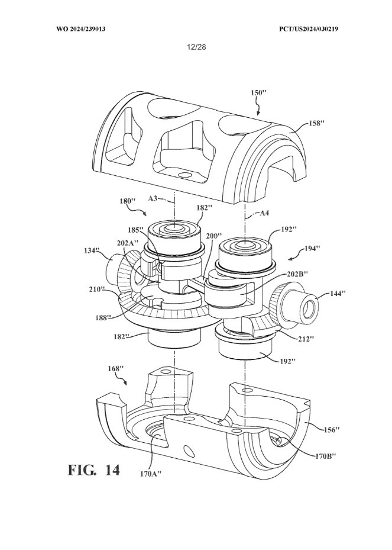
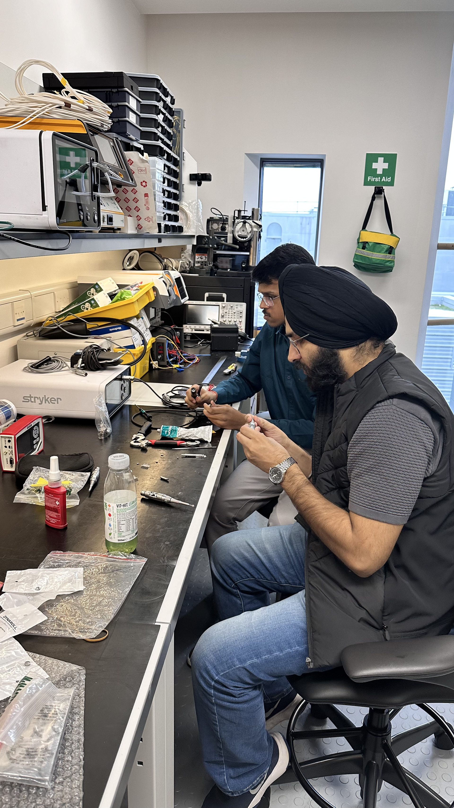
Tech Stack Used
- CAD, Drafting, GD&T
- PTC Creo
- Simulation & Thermal Analysis
- Creo Mechanism, Ansys
- Calculations, Tolerance Stack-up
- Microsoft Excel
- Material Selection. DFA, DFM and Six-Sigma principles
Disclaimer: The information presented in this page is based on published information in form of patents and articles, and does not disclose any commercially sensitive details.
You may also like
Meditate Air Purifier
Preface
The Mediate Air Purifier is a high-performance air purification system designed to remove airborne pollutants using NASA's TiO2 technology to kill airborne viruses and bacteria while maintaining optimal airflow and low noise levels. Engineered for both residential and commercial spaces, it integrates advanced HEPA filtration, aerodynamically optimized impellers, and intelligent airflow management to deliver clean, breathable air with a CADR (Clean Air Delivery Rate) of 400 m³/h and 250 m³/h.
Problem Statement
Traditional air purifiers often struggle with:
- Inefficient Airflow Management: Poorly designed impellers lead to air stagnation and uneven filtration, reducing efficiency by over 30%.
- High Noise Levels: Many purifiers produce more than 65 dB of noise due to turbulent airflow and inefficient fan designs.
- Reduced Filter Efficiency Over Time: Uneven Pressure drops across the HEPA filter can decrease performance, leading to reduced filtration efficiency.
- Energy Consumption vs. Performance Trade-off: Balancing high filtration efficiency with power consumption below 80W remains a key challenge.
Solution
The Mediate Air Purifier tackles these issues with:
- A custom-designed impeller optimized for high static pressure and smooth airflow reduces noise levels to 50 dB. The impeller was designed in a way that it was injection moulded as a single part.
- Advanced airflow dynamics ensuring uniform pressure distribution across the HEPA filter, enhancing particle capture efficiency by 23% and extending filter life.
- Fan curve analysis and pressure difference calculations to optimize motor performance, delivering 18% better energy efficiency compared to market alternatives.
- Injection-molded components designed for lightweight yet durable construction, reducing manufacturing costs while maintaining high performance.
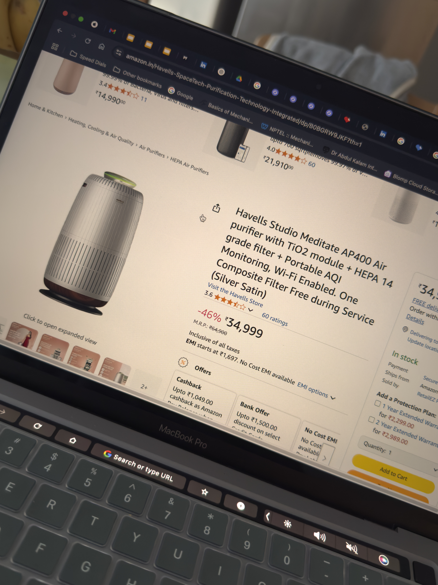
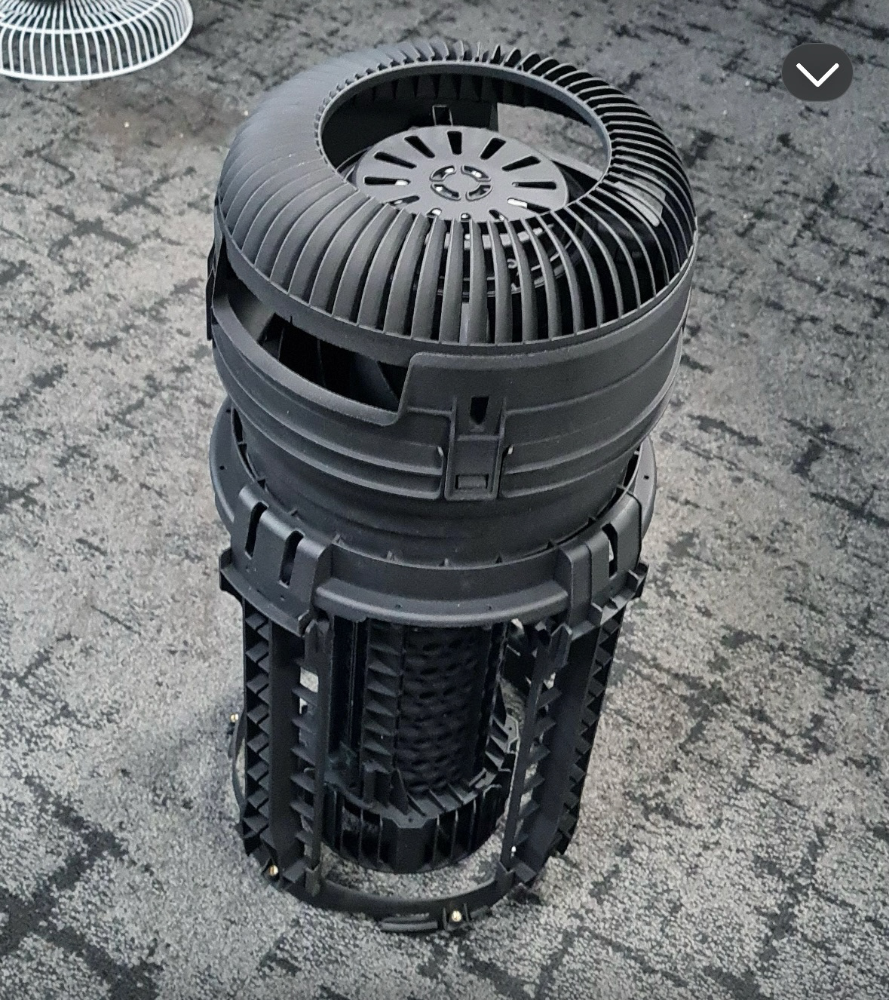
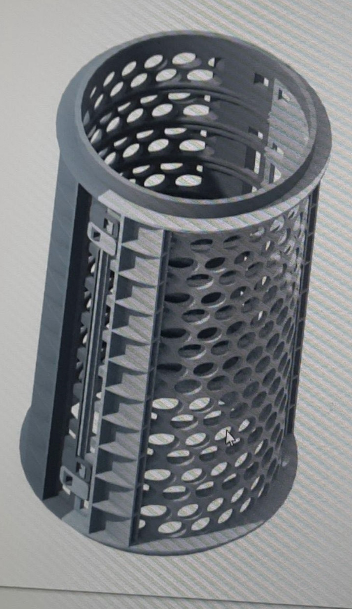
Disclaimer: The information presented in this page is based on published information in form of patents and articles, and does not disclose any commercially sensitive details.
Venturi Air Cooler and VTAS Valve
Preface
The Venturi Air Cooler is an innovative cooling system that operates on Bernoulli’s theorem, using the Venturi effect to lift water without a pump. This energy-efficient and sustainable design significantly reduces power consumption while enhancing cooling performance. Unlike traditional air coolers that rely on mechanical pumps to circulate water, this system leverages airflow dynamics to create a pressure drop, lifting and evaporating water efficiently.
Problem Statement
Conventional air coolers face multiple challenges:
- High Energy Consumption: Water pumps consume a substantial amount of power, increasing operational costs.
- Maintenance & Reliability Issues: Pump-based systems are prone to failures due to clogging, wear, and power fluctuations.
- Limited Cooling Efficiency: Inconsistent water flow affects the evaporation rate, leading to inefficient cooling.
- Environmental Impact: Additional electrical components increase the carbon footprint and operational inefficiencies.
Solution
The Venturi Air Cooler eliminates the need for a pump by harnessing the Venturi effect. As air flows through a narrowed passage, its velocity increases, creating a pressure drop that naturally lifts water from the reservoir to the cooling pads. This results in higher evaporation rates, improved cooling performance, and significant energy savings. By integrating aerodynamic principles into the design, the system ensures consistent water flow without mechanical assistance, making it more reliable and eco-friendly. VTAS valve, which was invented for this cooler ensures, the water can be sucked through the entire height, even when the available suction pressure is low. This is achieved using the flexible diaphragms and a pin in VTAS valve. When the chamber of the valve is filled with water using the available suction pressure, The flexible diaphragms switch to a configuration sing the weight of water, which cut-offs the suction line from VTAs chamber and opens up the infusion tube.
Results
The Venturi Air Cooler stands out as a low-maintenance, energy-efficient alternative to traditional coolers. It offers:
- Up to 30% lower power consumption compared to pump-based coolers.
- Increased cooling efficiency due to improved evaporation dynamics.
- Reduced maintenance as there are no pumps or moving parts prone to failure.
- Sustainable operation, contributing to a greener environment.
My Role/Contribution
- Led the mechanical design, handling CAD modeling, detailed drawings, and calculations to ensure optimal airflow and pressure dynamics.
- Developed and tested multiple prototypes, refining the design through iterative improvements.
- Optimized component selection and material design for durability, performance, and cost-effectiveness.
- Collaborated with cross-functional teams to integrate the system into Havells’ product lineup, ensuring feasibility and manufacturability.
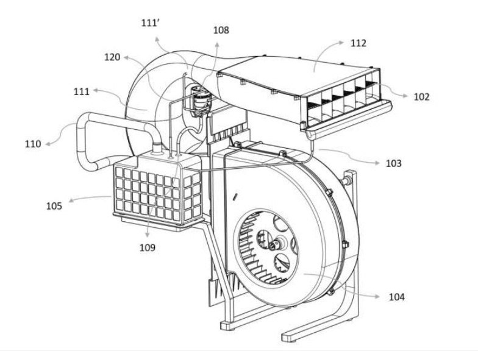
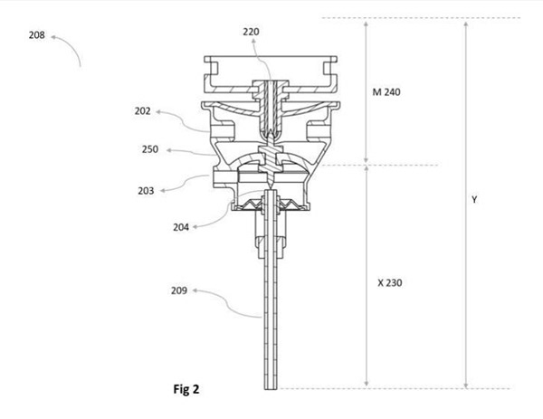
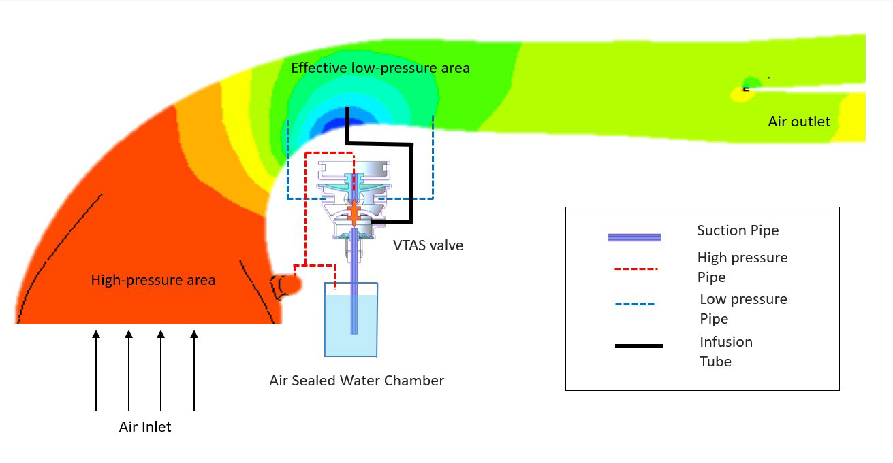
Working
As the air enters the converging diverging duct and travels along the length, it gains kinetic energy and looses its pressure as an effect of gradually reducing cross sectional area.
The gain in kinetic energy translates to high velocity of air, which results in a negative pressure area at the point of lowest cross sectional area. This negative pressure lifts the water and it is then infused in the throat section and the fast-moving air mixes with these water droplets, causing the water to evaporate. This process of evaporation absorbs heat from the air, making the air cooler.
The height up to which the water can be lifted naturally using the throat is referred to as Primary Height. But usually this height is very low and cannot be practically used to mae a commercial product.
In order to lift water from more height two additional mechanisms are deployed:
- High Pressure Pipe: When air enters the converging-diverging duct, it creates a high pressure region at the entrance. This High pressure air is directed to air sealed water chamber and the VTAS valve. This high pressure is used to increase the local chamber pressure up from atmospheric. Due to this increased chamber pressure water could be lifted to more height as difference between the suction pressure and the local chamber pressure drives the height at which water can be lifted.
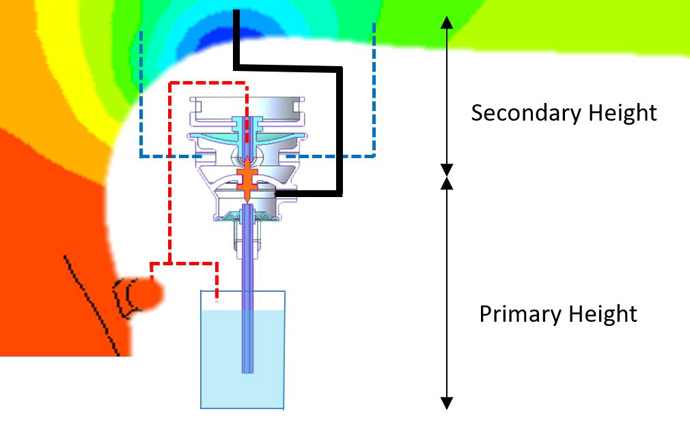
VTAS Valve (Vacuum To Atmospheric Switch Valve)
The VTAS valve is the heart of this pump-less system. It's a mechanically operated valve that works automatically in a cycle to lift water from the tank and inject it into the airflow.
Here is its working cycle explained:
- The low pressure created in the throat of the cooler is strong enough to suck water up to primary height from the main tank and into a small chamber within the VTAS valve.
- As the valve's chamber fills with water upto primary height, it becomes heavier. This added weight causes the chamber to physically move downwards. This downward movement does two things simultaneously: it closes the suction pipe from the water tank and opens up the infusion tube.
- With the water inlet now closed, high-pressure air from the high pressure pipe rushes into the VTAS valve chamber. This pressure forces the water out of the chamber through infusion pipe that leads directly into the low-pressure throat of the cooler (covering the secondary height) , where it is atomized and mixed with the main airflow.
- Once the valve chamber is empty, it becomes light again and moves back up to its original position. This re-opens the inlet from the water tank and closes the high-pressure air pipe. The cycle then repeats, continuously supplying water for the cooling process.
Essentially, the VTAS valve acts like a smart, self-operating bucket, using changes in weight and air pressure to automatically scoop up water and throw it into the air stream at just the right time and place
Disclaimer: The information presented in this page is based on published information in form of patents and articles, and does not disclose any commercially sensitive details.
You may also like
Hero MotoCorp
As a paid intern for 6 months at the world's largest two-wheeler automobile company, I gained valuable experience working on multiple projects. Key projects included enhancing 5C part traceability by implementing data matrix coding and analyzing machining processes to reduce yield loss.
Testing different sizes of data matrics scan code on engine casing with a laser engraving machine!
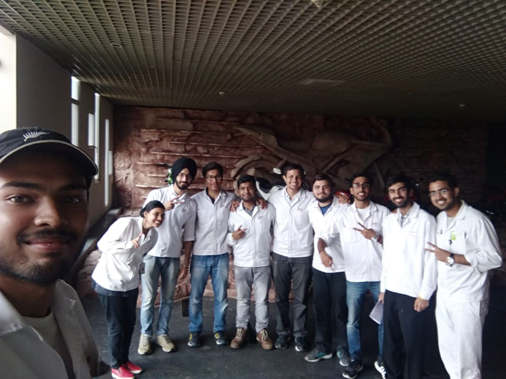
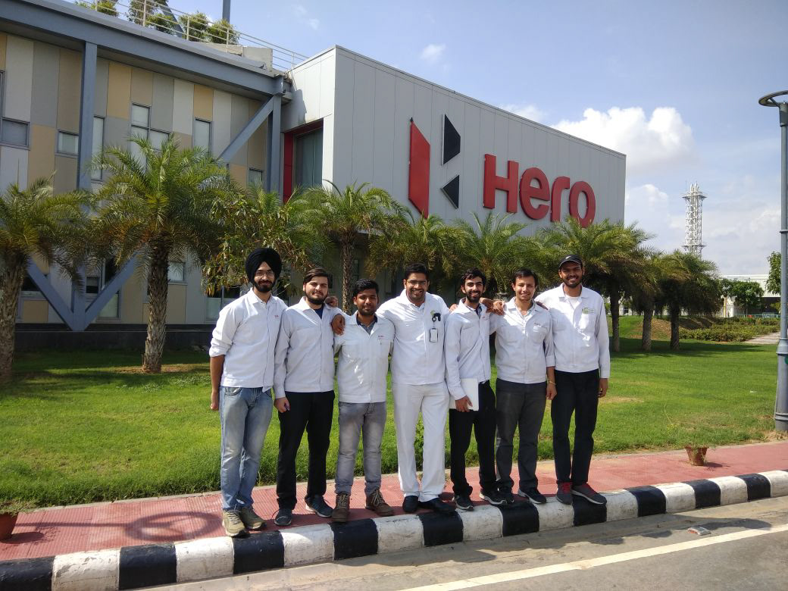
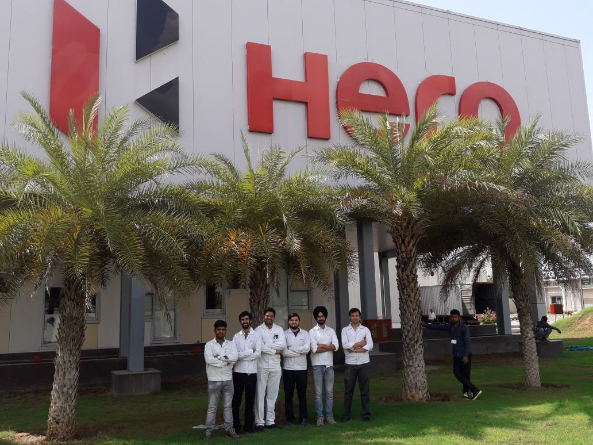
Fateh Motorsports
As an Engine Engineer at Fateh Motorsports, I was responsible for the design, analysis, and optimization of the engine systems for our race vehicle TUFF 10. My role involved developing, analyzing engine data, and ensuring that the engines met stringent reliability and power output targets. I worked closely with the design and testing teams to fine-tune engine components, optimize fuel efficiency, and improve overall performance. Fateh Motorsports is a formula student team from Thapar University.
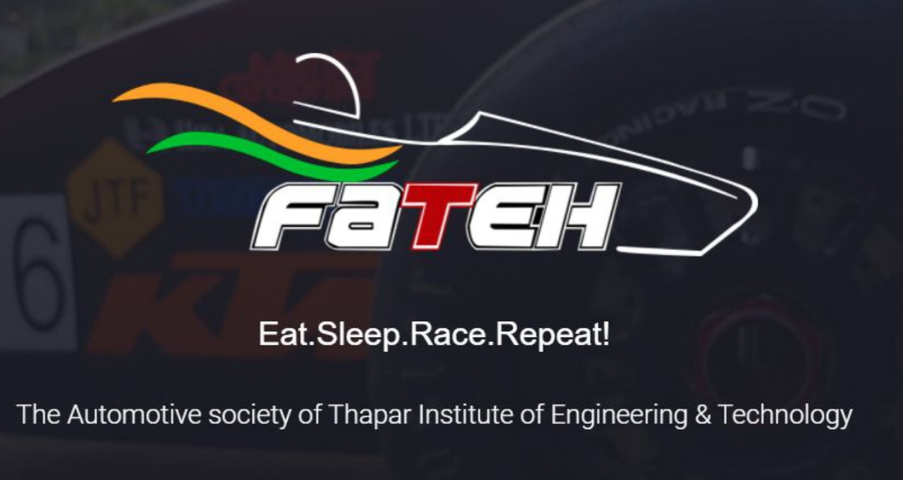
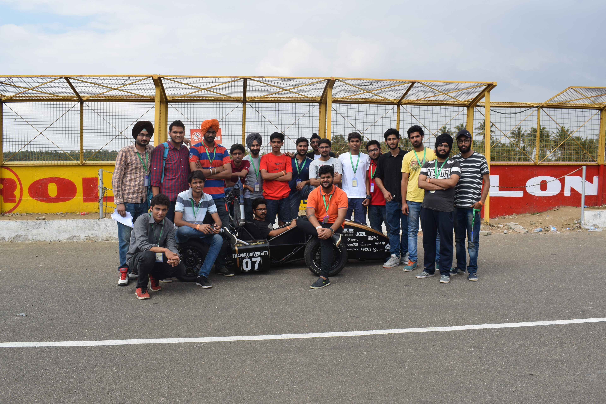
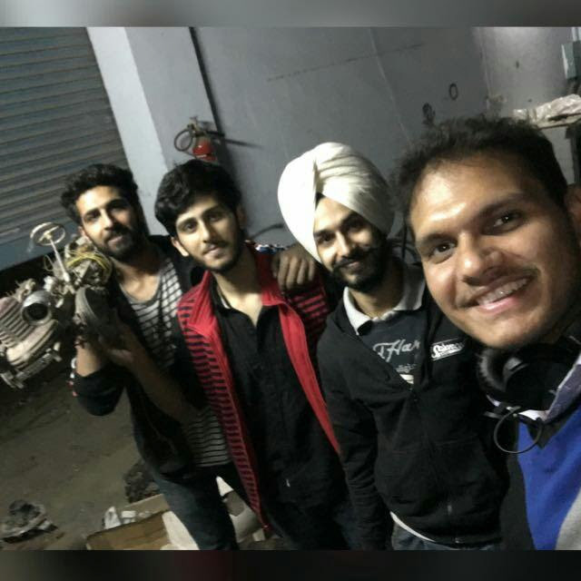
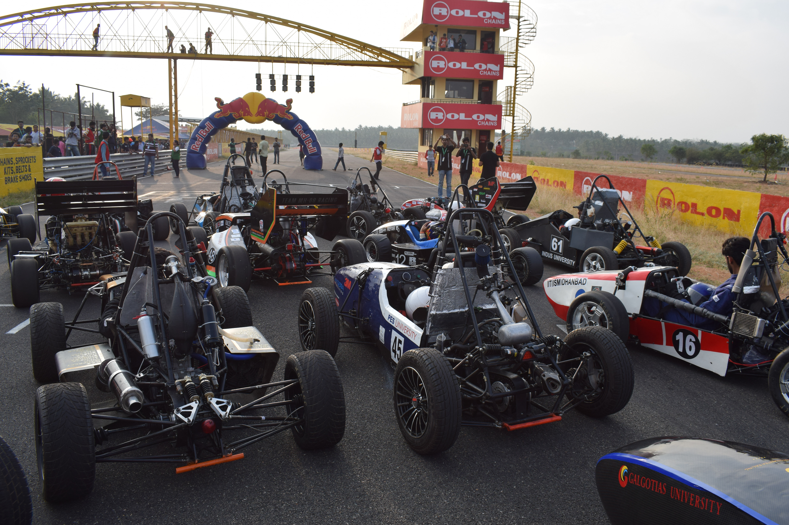
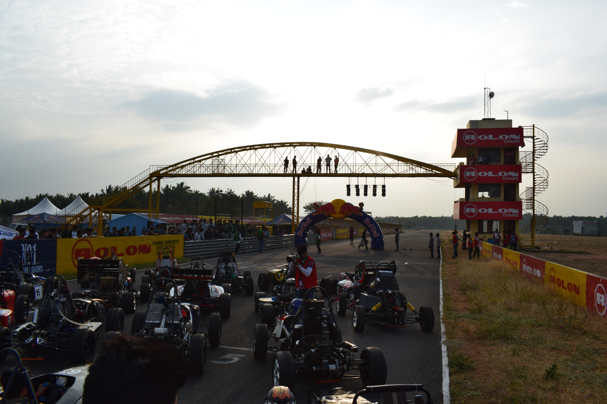
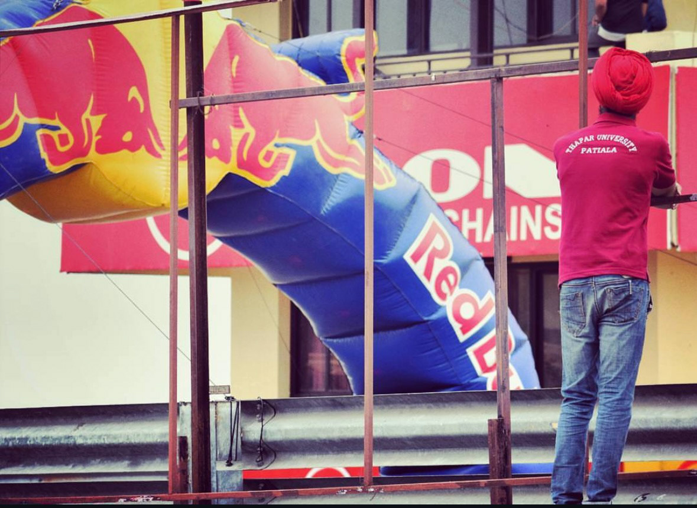
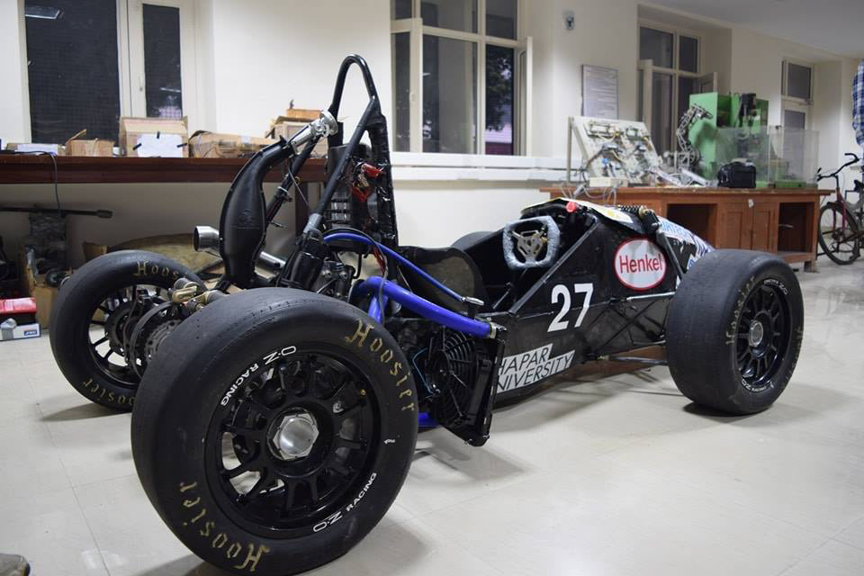